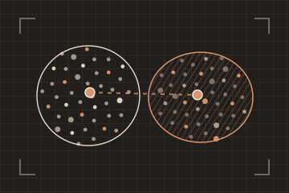

Gene-program constraints for spatial mapping
Extending NicheRadar to constrain single-cell-to-spatial mapping through the tissue distributions of gene programs.

Research question
Do spatial gene-program constraints help recover tissue composition and functional organization when mapping single-cell profiles to spatial locations?
Approach
This NicheRadar extension adds program-distribution constraints to spatial mapping and compares the resulting mappings with Tangram. Evaluation separates held-out cell-type composition from agreement with program distributions used as fitting targets.
Current evidence
An ovarian cancer benchmark compares frozen mappings across two measurement depths and ten optimization seeds. The results assess composition and spatial-program recovery within this benchmark; broader transfer remains to be tested.